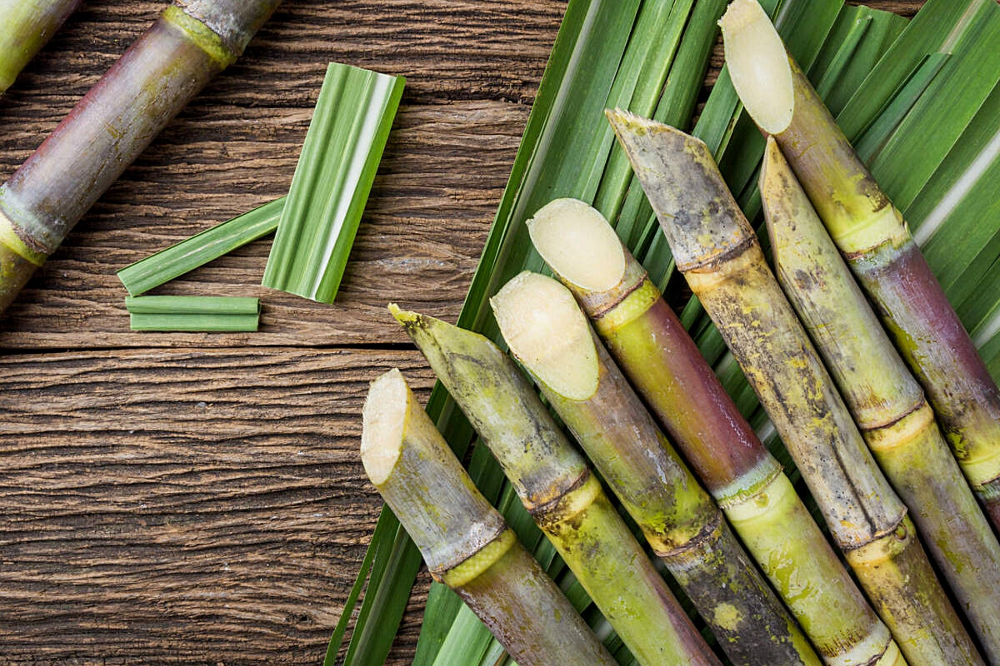
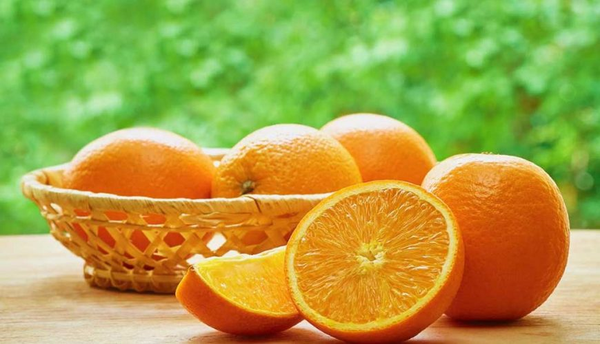

Redes Sociais


Principais Produtos da Agricultura Brasileira
Cana-de-açúcartambém é o maior produtor mundial, seguido de Índia, China, EUA e Tailândia. O estado de São Paulo responde por mais de 70% da produção nacional, com destaque também para Pernambuco, Alagoas, Paraná, Minas Gerais, Goiás, Mato Grosso e Mato Grosso do Sul.
Laranja
o país é o maior produtor mundial tanto da fruta quanto do suco, sendo responsável por mais de 80% do comércio mundial dessa commodity. São Paulo é o principal polo citricultor do país, com destaque para as cidades de Araraquara, Matão, Itápolis, Bebedouro, Olímpia e Monte Azul Paulista. EUA, China e Índia vêm na sequência, na produção mundial.
Até a década de 1990, Brasil e EUA rivalizavam mundialmente quanto à produção da laranja e de seu suco. Era praxe, nas áreas citricultoras brasileiras, a “torcida” por geadas na Flórida, principal área produtora estadunidense, pois uma redução na produção daquela área reduzia a oferta do suco em nível mundial, aumentando os preços e, consequentemente, melhorando os lucros dos produtores nacionais.
